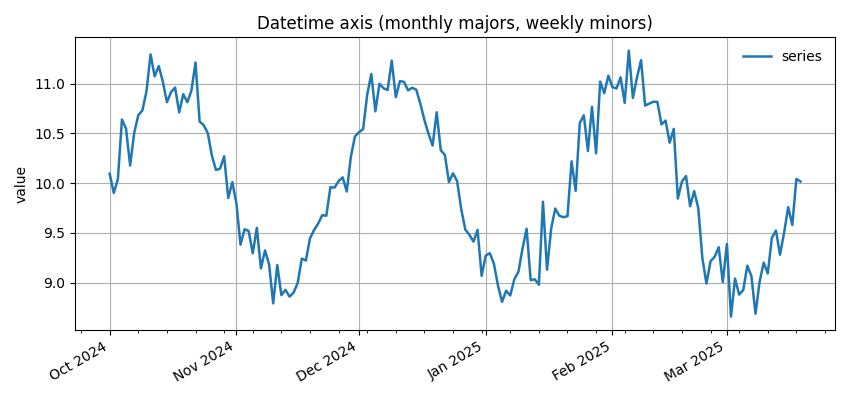

Note
Go to the end to download the full example code.
Datetime axis with monthly majors and weekly minors#
Configure a time-aware x-axis entirely through EMCPy: - Monthly major ticks with labels (e.g., “Oct 2024”) - Weekly minor ticks - Rotated, right-aligned labels

import numpy as np
import matplotlib.pyplot as plt
import datetime as dt
from emcpy.plots.plots import LinePlot
from emcpy.plots.create_plots import CreatePlot, CreateFigure
start = dt.datetime(2024, 10, 1)
dates = np.array([start + dt.timedelta(days=i) for i in range(170)])
y = 10 + np.sin(np.linspace(0, 6*np.pi, dates.size)) + 0.2*np.random.randn(dates.size)
p = CreatePlot()
lp = LinePlot(dates, y)
lp.linewidth = 1.8
lp.label = "series"
p.plot_layers = [lp]
p.add_title("Datetime axis (monthly majors, weekly minors)")
p.add_ylabel("value")
p.add_grid()
# EMCPy time-axis helper applies locators/formatter/rotation
p.set_time_axis(major="month", minor="week", fmt="%b %Y", rotate=30, ha="right")
p.add_legend(loc="upper right", frameon=False)
fig = CreateFigure(nrows=1, ncols=1, figsize=(8.5, 4))
fig.plot_list = [p]
fig.create_figure()
fig.tight_layout()
plt.show()
Total running time of the script: (0 minutes 0.119 seconds)